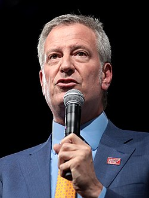

<!DOCTYPE html>
<html lang="en">
<head>
    <meta charset="UTF-8">
    <meta name="viewport" content="width=device-width, initial-scale=1.0">
    <title>TP1 - HTML</title>
</head>
</html>
<body>
    <h1>Bill de Blasio</h1>
    <table>
        <tr>
            <td>
                <header><p><strong>Warren Wilhelm de Blasio Jr.</strong> (Manhattan, <strong>Nueva York</strong>; 8 de mayo de 1961), conocido simplemente como <strong>Bill de Blasio</strong>, es un <a href="#">político estadounidense</a> que ejerció como alcalde de la ciudad de Nueva York entre 2014 y 2022. Desde 2010 hasta 2013 ocupó el cargo de <a href="#">Defensor Público de la ciudad de Nueva York</a>.</p></header>
                <p>El 5 de noviembre de 2013, ganó las elecciones para alcalde, con casi el 73 % de los votos del Partido Demócrata, sustituyendo al también demócrata <a href="#">Michael Bloomberg</a>.</p>
                <h2>Infancia y educación</h2>
                <p>Es hijo de Maria y Warren Wilhelm. Bautizado como Warren Wilhelm Junior, nació en Manhattan y se crió en Cambridge (Massachusetts). Tiene dos hermanos mayores: Steven y Donald. Habla italiano y fue bautizado como católico, pero no es practicante. Su padre era de origen alemán y sus abuelos maternos, Giovanni y Ana, inmigrantes italianos de Sant'Agata de' Goti, provincia de Benevento. Su madre se graduó del Smith College en 1938 y tenía 44 años cuando él nació. Su abuelo, Donald Wilhelm, es autor graduado de la Universidad de Harvard.</p>
            </td>
            <td>
                <h3>Bill de Blasio</h3>
                
                <p>Bill de Blasio en 2019</p>
            </td>
        </tr>
    </table>
</body>
</html>
